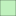

<!doctype html>
<html lang="en">
    <head>
        <meta charset="utf-8">
        <meta http-equiv="X-UA-Compatible" content="IE=edge">
        <meta name="viewport" content="initial-scale=1,user-scalable=no,maximum-scale=1,width=device-width">
        <meta name="mobile-web-app-capable" content="yes">
        <meta name="apple-mobile-web-app-capable" content="yes">
        <link rel="stylesheet" href="css/leaflet.css">
        <link rel="stylesheet" href="css/L.Control.Layers.Tree.css">
        <link rel="stylesheet" href="css/qgis2web.css">
        <link rel="stylesheet" href="css/fontawesome-all.min.css">
        <link rel="stylesheet" href="css/leaflet-control-geocoder.Geocoder.css">
        <link rel="stylesheet" href="css/leaflet-measure.css">
        <style>
        html, body, #map {
            width: 100%;
            height: 100%;
            padding: 0;
            margin: 0;
        }
        </style>
        <title>Kaart meldingen bomenkapmeldpunt</title>
    </head>
    <body>
        <div id="map">
        </div>
        <script src="js/qgis2web_expressions.js"></script>
        <script src="js/leaflet.js"></script>
        <script src="js/L.Control.Layers.Tree.min.js"></script>
        <script src="js/leaflet.rotatedMarker.js"></script>
        <script src="js/leaflet.pattern.js"></script>
        <script src="js/leaflet-hash.js"></script>
        <script src="js/Autolinker.min.js"></script>
        <script src="js/rbush.min.js"></script>
        <script src="js/labelgun.min.js"></script>
        <script src="js/labels.js"></script>
        <script src="js/leaflet-control-geocoder.Geocoder.js"></script>
        <script src="js/leaflet-measure.js"></script>
        <script src="data/gemeentegrenzenNederland_1.js"></script>
        <script src="data/Natura2000_2.js"></script>
        <script src="data/Locaties_Meldingen_3.js"></script>
        <script>
        var map = L.map('map', {
            zoomControl:false, maxZoom:28, minZoom:1
        })
        var hash = new L.Hash(map);
        map.attributionControl.setPrefix('<a href="https://github.com/tomchadwin/qgis2web" target="_blank">qgis2web</a> &middot; <a href="https://leafletjs.com" title="A JS library for interactive maps">Leaflet</a> &middot; <a href="https://qgis.org">QGIS</a>');
        var autolinker = new Autolinker({truncate: {length: 30, location: 'smart'}});
        // remove popup's row if "visible-with-data"
        function removeEmptyRowsFromPopupContent(content, feature) {
         var tempDiv = document.createElement('div');
         tempDiv.innerHTML = content;
         var rows = tempDiv.querySelectorAll('tr');
         for (var i = 0; i < rows.length; i++) {
             var td = rows[i].querySelector('td.visible-with-data');
             var key = td ? td.id : '';
             if (td && td.classList.contains('visible-with-data') && feature.properties[key] == null) {
                 rows[i].parentNode.removeChild(rows[i]);
             }
         }
         return tempDiv.innerHTML;
        }
        // add class to format popup if it contains media
		function addClassToPopupIfMedia(content, popup) {
			var tempDiv = document.createElement('div');
			tempDiv.innerHTML = content;
			if (tempDiv.querySelector('td img')) {
				popup._contentNode.classList.add('media');
					// Delay to force the redraw
					setTimeout(function() {
						popup.update();
					}, 10);
			} else {
				popup._contentNode.classList.remove('media');
			}
		}
        var title = new L.Control({'position':'topleft'});
        title.onAdd = function (map) {
            this._div = L.DomUtil.create('div', 'info');
            this.update();
            return this._div;
        };
        title.update = function () {
            this._div.innerHTML = '<h2>Kaart meldingen bomenkapmeldpunt</h2>';
        };
        title.addTo(map);
        var abstract = new L.Control({'position':'topright'});
        abstract.onAdd = function (map) {
            this._div = L.DomUtil.create('div',
            'leaflet-control abstract');
            this._div.id = 'abstract'
                this._div.setAttribute("onmouseenter", "abstract.show()");
                this._div.setAttribute("onmouseleave", "abstract.hide()");
                this.hide();
                return this._div;
            };
            abstract.hide = function () {
                this._div.classList.remove("abstractUncollapsed");
                this._div.classList.add("abstract");
                this._div.innerHTML = 'i'
            }
            abstract.show = function () {
                this._div.classList.remove("abstract");
                this._div.classList.add("abstractUncollapsed");
                this._div.innerHTML = 'Deze kaart bevat alle meldingen tot en met 15 mei 2025 van de website https://www.bomenkapmeldpunt.nl/.<br />De kaart wordt ongeveer 5x per jaar geactualiseerd.<br />Diverse bomen = meer dan 10,Grootschalig = meer dan 100 en Zeer Grootschalig = meer dan 500';
        };
        abstract.addTo(map);
        var zoomControl = L.control.zoom({
            position: 'topleft'
        }).addTo(map);
        var measureControl = new L.Control.Measure({
            position: 'topleft',
            primaryLengthUnit: 'meters',
            secondaryLengthUnit: 'kilometers',
            primaryAreaUnit: 'sqmeters',
            secondaryAreaUnit: 'hectares'
        });
        measureControl.addTo(map);
        document.getElementsByClassName('leaflet-control-measure-toggle')[0].innerHTML = '';
        document.getElementsByClassName('leaflet-control-measure-toggle')[0].className += ' fas fa-ruler';
        var bounds_group = new L.featureGroup([]);
        function setBounds() {
            if (bounds_group.getLayers().length) {
                map.fitBounds(bounds_group.getBounds());
            }
        }
        map.createPane('pane_OSMStandard_0');
        map.getPane('pane_OSMStandard_0').style.zIndex = 400;
        var layer_OSMStandard_0 = L.tileLayer('http://tile.openstreetmap.org/{z}/{x}/{y}.png', {
            pane: 'pane_OSMStandard_0',
            opacity: 1.0,
            attribution: '<a href="https://www.openstreetmap.org/copyright">© OpenStreetMap contributors, CC-BY-SA</a>',
            minZoom: 1,
            maxZoom: 28,
            minNativeZoom: 0,
            maxNativeZoom: 19
        });
        layer_OSMStandard_0;
        map.addLayer(layer_OSMStandard_0);
        function pop_gemeentegrenzenNederland_1(feature, layer) {
            var popupContent = '<table>\
                    <tr>\
                        <th scope="row">code</th>\
                        <td>' + (feature.properties['code'] !== null ? autolinker.link(String(feature.properties['code']).replace(/'/g, '\'').toLocaleString()) : '') + '</td>\
                    </tr>\
                    <tr>\
                        <th scope="row">gemeentena</th>\
                        <td>' + (feature.properties['gemeentena'] !== null ? autolinker.link(String(feature.properties['gemeentena']).replace(/'/g, '\'').toLocaleString()) : '') + '</td>\
                    </tr>\
                </table>';
            var content = removeEmptyRowsFromPopupContent(popupContent, feature);
			layer.on('popupopen', function(e) {
				addClassToPopupIfMedia(content, e.popup);
			});
			layer.bindPopup(content, { maxHeight: 400 });
        }

        function style_gemeentegrenzenNederland_1_0() {
            return {
                pane: 'pane_gemeentegrenzenNederland_1',
                opacity: 1,
                color: 'rgba(0,0,0,1.0)',
                dashArray: '',
                lineCap: 'butt',
                lineJoin: 'miter',
                weight: 1.0, 
                fill: true,
                fillOpacity: 1,
                fillColor: 'rgba(190,207,80,0.0)',
                interactive: true,
            }
        }
        map.createPane('pane_gemeentegrenzenNederland_1');
        map.getPane('pane_gemeentegrenzenNederland_1').style.zIndex = 401;
        map.getPane('pane_gemeentegrenzenNederland_1').style['mix-blend-mode'] = 'normal';
        var layer_gemeentegrenzenNederland_1 = new L.geoJson(json_gemeentegrenzenNederland_1, {
            attribution: '',
            interactive: true,
            dataVar: 'json_gemeentegrenzenNederland_1',
            layerName: 'layer_gemeentegrenzenNederland_1',
            pane: 'pane_gemeentegrenzenNederland_1',
            onEachFeature: pop_gemeentegrenzenNederland_1,
            style: style_gemeentegrenzenNederland_1_0,
        });
        bounds_group.addLayer(layer_gemeentegrenzenNederland_1);
        map.addLayer(layer_gemeentegrenzenNederland_1);
        function pop_Natura2000_2(feature, layer) {
            var popupContent = '<table>\
                    <tr>\
                        <th scope="row">naam_n2k</th>\
                        <td>' + (feature.properties['naam_n2k'] !== null ? autolinker.link(String(feature.properties['naam_n2k']).replace(/'/g, '\'').toLocaleString()) : '') + '</td>\
                    </tr>\
                </table>';
            var content = removeEmptyRowsFromPopupContent(popupContent, feature);
			layer.on('popupopen', function(e) {
				addClassToPopupIfMedia(content, e.popup);
			});
			layer.bindPopup(content, { maxHeight: 400 });
        }

        function style_Natura2000_2_0() {
            return {
                pane: 'pane_Natura2000_2',
                opacity: 1,
                color: 'rgba(35,35,35,0.87)',
                dashArray: '',
                lineCap: 'butt',
                lineJoin: 'miter',
                weight: 1.0, 
                fill: true,
                fillOpacity: 1,
                fillColor: 'rgba(105,225,103,0.87)',
                interactive: true,
            }
        }
        map.createPane('pane_Natura2000_2');
        map.getPane('pane_Natura2000_2').style.zIndex = 402;
        map.getPane('pane_Natura2000_2').style['mix-blend-mode'] = 'normal';
        var layer_Natura2000_2 = new L.geoJson(json_Natura2000_2, {
            attribution: '',
            interactive: true,
            dataVar: 'json_Natura2000_2',
            layerName: 'layer_Natura2000_2',
            pane: 'pane_Natura2000_2',
            onEachFeature: pop_Natura2000_2,
            style: style_Natura2000_2_0,
        });
        bounds_group.addLayer(layer_Natura2000_2);
        map.addLayer(layer_Natura2000_2);
        function pop_Locaties_Meldingen_3(feature, layer) {
            var popupContent = '<table>\
                    <tr>\
                        <th scope="row">tekst</th>\
                        <td>' + (feature.properties['tekst'] !== null ? autolinker.link(String(feature.properties['tekst']).replace(/'/g, '\'').toLocaleString()) : '') + '</td>\
                    </tr>\
                    <tr>\
                        <th scope="row">datum</th>\
                        <td>' + (feature.properties['datum'] !== null ? autolinker.link(String(feature.properties['datum']).replace(/'/g, '\'').toLocaleString()) : '') + '</td>\
                    </tr>\
                    <tr>\
                        <th scope="row">linkurl</th>\
                        <td>' + (feature.properties['linkurl'] !== null ? autolinker.link(String(feature.properties['linkurl']).replace(/'/g, '\'').toLocaleString()) : '') + '</td>\
                    </tr>\
                    <tr>\
                        <th scope="row">grootte</th>\
                        <td>' + (feature.properties['grootte'] !== null ? autolinker.link(String(feature.properties['grootte']).replace(/'/g, '\'').toLocaleString()) : '') + '</td>\
                    </tr>\
                    <tr>\
                        <th scope="row">initiatief</th>\
                        <td>' + (feature.properties['initiatief'] !== null ? autolinker.link(String(feature.properties['initiatief']).replace(/'/g, '\'').toLocaleString()) : '') + '</td>\
                    </tr>\
                    <tr>\
                        <th scope="row">jaar</th>\
                        <td>' + (feature.properties['jaar'] !== null ? autolinker.link(String(feature.properties['jaar']).replace(/'/g, '\'').toLocaleString()) : '') + '</td>\
                    </tr>\
                    <tr>\
                        <th scope="row">jaargetij</th>\
                        <td>' + (feature.properties['jaargetij'] !== null ? autolinker.link(String(feature.properties['jaargetij']).replace(/'/g, '\'').toLocaleString()) : '') + '</td>\
                    </tr>\
                    <tr>\
                        <th scope="row">innatura</th>\
                        <td>' + (feature.properties['innatura'] !== null ? autolinker.link(String(feature.properties['innatura']).replace(/'/g, '\'').toLocaleString()) : '') + '</td>\
                    </tr>\
                </table>';
            var content = removeEmptyRowsFromPopupContent(popupContent, feature);
			layer.on('popupopen', function(e) {
				addClassToPopupIfMedia(content, e.popup);
			});
			layer.bindPopup(content, { maxHeight: 400 });
        }

        function style_Locaties_Meldingen_3_0(feature) {
            switch(String(feature.properties['grootte'])) {
                case 'Diverse bomen':
                    return {
                pane: 'pane_Locaties_Meldingen_3',
                radius: 8.4,
                opacity: 1,
                color: 'rgba(255,255,255,1.0)',
                dashArray: '',
                lineCap: 'butt',
                lineJoin: 'miter',
                weight: 1,
                fill: true,
                fillOpacity: 1,
                fillColor: 'rgba(20,157,33,1.0)',
                interactive: true,
            }
                    break;
                case 'Een boom':
                    return {
                pane: 'pane_Locaties_Meldingen_3',
                radius: 4.0,
                opacity: 1,
                color: 'rgba(255,255,255,1.0)',
                dashArray: '',
                lineCap: 'butt',
                lineJoin: 'miter',
                weight: 2.0,
                fill: true,
                fillOpacity: 1,
                fillColor: 'rgba(0,0,0,1.0)',
                interactive: true,
            }
                    break;
                case 'Grootschalig':
                    return {
                pane: 'pane_Locaties_Meldingen_3',
                radius: 10.0,
                opacity: 1,
                color: 'rgba(255,255,255,1.0)',
                dashArray: '',
                lineCap: 'butt',
                lineJoin: 'miter',
                weight: 2.0,
                fill: true,
                fillOpacity: 1,
                fillColor: 'rgba(241,136,21,1.0)',
                interactive: true,
            }
                    break;
                case 'Zeer Grootschalig':
                    return {
                pane: 'pane_Locaties_Meldingen_3',
                radius: 10.0,
                opacity: 1,
                color: 'rgba(255,255,255,1.0)',
                dashArray: '',
                lineCap: 'butt',
                lineJoin: 'miter',
                weight: 2.0,
                fill: true,
                fillOpacity: 1,
                fillColor: 'rgba(255,0,0,1.0)',
                interactive: true,
            }
                    break;
            }
        }
        map.createPane('pane_Locaties_Meldingen_3');
        map.getPane('pane_Locaties_Meldingen_3').style.zIndex = 403;
        map.getPane('pane_Locaties_Meldingen_3').style['mix-blend-mode'] = 'normal';
        var layer_Locaties_Meldingen_3 = new L.geoJson(json_Locaties_Meldingen_3, {
            attribution: '',
            interactive: true,
            dataVar: 'json_Locaties_Meldingen_3',
            layerName: 'layer_Locaties_Meldingen_3',
            pane: 'pane_Locaties_Meldingen_3',
            onEachFeature: pop_Locaties_Meldingen_3,
            pointToLayer: function (feature, latlng) {
                var context = {
                    feature: feature,
                    variables: {}
                };
                return L.circleMarker(latlng, style_Locaties_Meldingen_3_0(feature));
            },
        });
        bounds_group.addLayer(layer_Locaties_Meldingen_3);
        map.addLayer(layer_Locaties_Meldingen_3);
        var osmGeocoder = new L.Control.Geocoder({
            collapsed: true,
            position: 'topleft',
            text: 'Search',
            title: 'Testing'
        }).addTo(map);
        document.getElementsByClassName('leaflet-control-geocoder-icon')[0]
        .className += ' fa fa-search';
        document.getElementsByClassName('leaflet-control-geocoder-icon')[0]
        .title += 'Search for a place';
        var overlaysTree = [
            {label: 'Locaties_Meldingen<br /><table><tr><td style="text-align: center;"></td><td>Diverse bomen</td></tr><tr><td style="text-align: center;"></td><td>Een boom</td></tr><tr><td style="text-align: center;"></td><td>Grootschalig</td></tr><tr><td style="text-align: center;"></td><td>Zeer Grootschalig</td></tr></table>', layer: layer_Locaties_Meldingen_3},
            {label: ' Natura2000', layer: layer_Natura2000_2},
            {label: ' gemeentegrenzen Nederland', layer: layer_gemeentegrenzenNederland_1},
            {label: "OSM Standard", layer: layer_OSMStandard_0},]
        var lay = L.control.layers.tree(null, overlaysTree,{
            //namedToggle: true,
            //selectorBack: false,
            //closedSymbol: '&#8862; &#x1f5c0;',
            //openedSymbol: '&#8863; &#x1f5c1;',
            //collapseAll: 'Collapse all',
            //expandAll: 'Expand all',
            collapsed: false, 
        });
        lay.addTo(map);
		document.addEventListener("DOMContentLoaded", function() {
            // set new Layers List height which considers toggle icon
            function newLayersListHeight() {
                var layerScrollbarElement = document.querySelector('.leaflet-control-layers-scrollbar');
                if (layerScrollbarElement) {
                    var layersListElement = document.querySelector('.leaflet-control-layers-list');
                    var originalHeight = layersListElement.style.height 
                        || window.getComputedStyle(layersListElement).height;
                    var newHeight = parseFloat(originalHeight) - 50;
                    layersListElement.style.height = newHeight + 'px';
                }
            }
            var isLayersListExpanded = true;
            var controlLayersElement = document.querySelector('.leaflet-control-layers');
            var toggleLayerControl = document.querySelector('.leaflet-control-layers-toggle');
            // toggle Collapsed/Expanded and apply new Layers List height
            toggleLayerControl.addEventListener('click', function() {
                if (isLayersListExpanded) {
                    controlLayersElement.classList.remove('leaflet-control-layers-expanded');
                } else {
                    controlLayersElement.classList.add('leaflet-control-layers-expanded');
                }
                isLayersListExpanded = !isLayersListExpanded;
                newLayersListHeight()
            });	
			// apply new Layers List height if toggle layerstree
			if (controlLayersElement) {
				controlLayersElement.addEventListener('click', function(event) {
					var toggleLayerHeaderPointer = event.target.closest('.leaflet-layerstree-header-pointer span');
					if (toggleLayerHeaderPointer) {
						newLayersListHeight();
					}
				});
			}
            // Collapsed/Expanded at Start to apply new height
            setTimeout(function() {
                toggleLayerControl.click();
            }, 10);
            setTimeout(function() {
                toggleLayerControl.click();
            }, 10);
            // Collapsed touch/small screen
            var isSmallScreen = window.innerWidth < 650;
            if (isSmallScreen) {
                setTimeout(function() {
                    controlLayersElement.classList.remove('leaflet-control-layers-expanded');
                    isLayersListExpanded = !isLayersListExpanded;
                }, 500);
            }  
        });       
        setBounds();
        resetLabels([layer_Locaties_Meldingen_3]);
        map.on("zoomend", function(){
            resetLabels([layer_Locaties_Meldingen_3]);
        });
        map.on("layeradd", function(){
            resetLabels([layer_Locaties_Meldingen_3]);
        });
        map.on("layerremove", function(){
            resetLabels([layer_Locaties_Meldingen_3]);
        });
        </script>
    </body>
</html>
